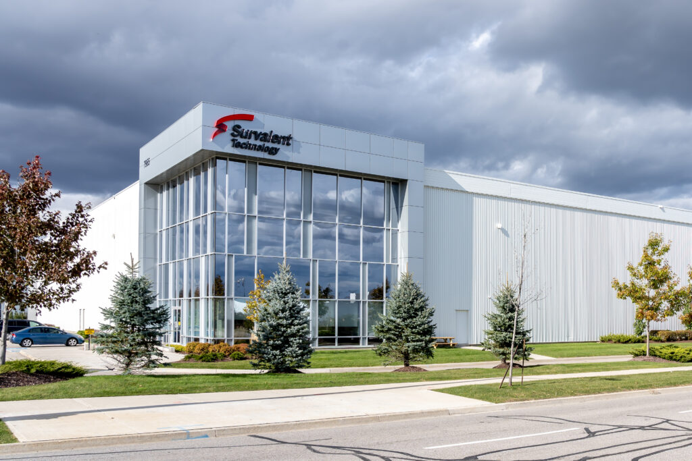
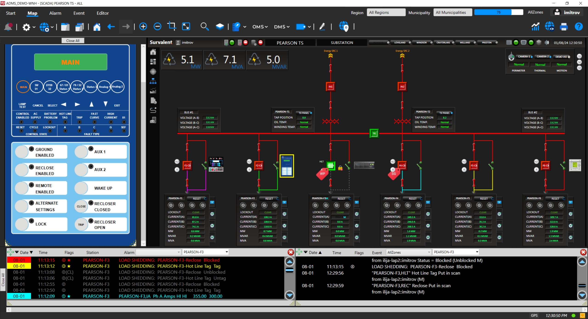

Summer 2025 - Survalent
Ethan Wang - wange@uoguelph.ca

Survalent - Brampton Office
Welcome to my report on my second work term as a Quality and Infrastructure Developer at Survalent Technology. This term, I focused on developing automated UI tests for SmartVU’s PMacro functions, contributing to the overall reliability and efficiency of Survalent’s SCADA systems. Through hands-on experience with real-world projects, I strengthened my technical skills in test automation, improved my understanding of large-scale utility software, and collaborated closely with a skilled and supportive team. This report outlines the key projects I worked on, the challenges I faced, the solutions I implemented, and the growth I experienced both technically and professionally.
About the Employer

Survalent develops software for Advanced Distribution Management Systems (ADMS), which are used by electric, renewable energy, oil & gas, water/wastewater, and transit utilities across the globe. These systems, built on a Supervisory Control and Data Acquisition (SCADA) platform, allow utilities to effectively operate, monitor, analyze, restore, and optimize their operations. By offering a fully integrated solution to support critical utility functions, Survalent enables its customers to achieve greater operational efficiency, enhanced customer satisfaction, and improved network reliability.
My Role

A substation built in SmartVU using PMacros
This summer I mainly worked on creating automated UI tests for SmartVUs PMacro functions, which are used within Survalent’s SCADA system to automate and simplify complex operational workflows. My role focused on improving test coverage, reliability, and maintainability of the PMacro functionality by developing automated test cases using an inhouse developed test framework. I also worked with other members of the development team to discuss UI Changes.
Throughout the term, I collaborated closely with both the Quality Assurance and Development teams to identify critical user scenarios and ensure that all key features were thoroughly tested. This involved analyzing existing manual test cases, translating them into automated scripts, and running them against multiple versions of the application to validate consistency and performance.
One of the main challenges I faced was ensuring the tests were resilient against frequent UI changes. To address this, I implemented dynamic element locators, user editable parameters and built reusable components within the test framework. This not only reduced the maintenance overhead but also sped up the development of future tests.
Goals
-
Communication - Deeper understanding of how technical problems are communicated, discussed, and collaboratively resolved.
I believe I have improved my communication skills around technical problems by becoming more confident in approaching challenges, asking for help when needed, and contributing more effectively to team discussions. I'm better at breaking down complex issues, explaining my thought process, and collaborating with others to find solutions.
-
Creativity - Develop creative and effective solutions to technical problems by applying critical thinking, exploring alternative approaches, and learning from past challenges.
I improved my ability to develop creative and effective solutions by exploring different approaches to technical problems and actively seeking feedback from my team. While automating UI tests for SmartVU’s PMacro functions, I addressed challenges like frequent UI changes by implementing dynamic element locators and reusable components. These strategies led to more reliable and maintainable tests, and the positive feedback I received reflected the success of my creative problem-solving efforts.
-
Communication - Understanding of Software Development and its Processes. Improve my code reviews and pull requests
I have improved my code reviews and pull requests by providing clearer, more constructive feedback and writing detailed descriptions that help the team understand my changes. This has led to smoother collaboration and higher code quality.
Conclusion
My second work term at Survalent Technology was a highly rewarding experience that allowed me to grow both technically and professionally. I deepened my knowledge of automated testing and software development practices while contributing to real world projects like SmartVU, which gave me valuable insight into the operation of large scale utility systems and the role of quality in mission critical software. Collaborating with a supportive and knowledgeable team helped me sharpen my problem solving and communication skills. This term has not only boosted my confidence but also given me clearer direction and motivation as I continue to pursue a career in software development.
Acknowledgments
I’d like to thank Evan, a fellow UoG coop student, for being a great collaborator throughout the term. It was really helpful to share ideas and troubleshoot challenges together.